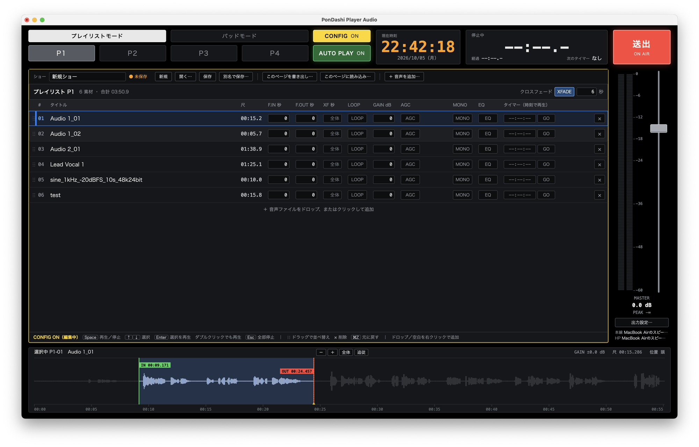

お知らせ
PonDashi Player Audio 1.0.1（直販版）を公開しました Space で止めるときのフェードアウト、パッドごとの鳴り方（MANUAL）、パッドのショートカットの変更（テンキーなど）、パッドからプレイリストへのコピーを追加しました。かんたんマニュアルも 1.0.1 に更新しています。すでにお使いの方は、ダウンロードした DMG からアプリを入れ替えるだけで、ライセンスはそのまま使えます。App Store 版は後日更新します。
バージョンアップ予定（1.1） PonDashi Player Audio の MIDI 連動、ページ一括削除、曲ごとの音量フェーダーなどを、10 月末までにリリース予定です。ただいま動作検証中です。バージョンアップに伴う追加料金は発生しません。すでにお使いの方は、そのままライセンスを引き継ぐことができます。
※ 画像は開発中のものです。仕様は変更になる可能性があります。
PonDashi Player Audio を公式サイトで販売開始しました。1 ライセンス（Mac 1 台）1,000 円（税込）。
ApexCue Transfer（Q-SYS® 録音データ自動転送ツール）の販売を開始しました。価格・導入のご相談はお問い合わせください。
PonDashi Player Audio PRO（LTC 対応版）を開発中です。
ApexCue のウェブサイトを公開しました。


Product
名前を押すと、各アプリのページ（機能・サポート・プライバシーポリシー）へ進みます。
-
 公式サイトで販売中
公式サイトで販売中
-
 配信準備中
配信準備中PonDashi Player Audio PRO
PonDashi Player Audio の上位版。Core Audio にネイティブ対応し、内部の音声処理にもこだわって高音質を実現しました。出力バスのルーティング、専用リモコンアプリでの操作に対応。LTC（タイムコード）の入力・出力は、オプション（別売）で加えられます。
PonDashi Player Audio PRO を見る -
 App Store で公開予定
App Store で公開予定PonDashi Remote
PonDashi Player Audio PRO を iPhone・iPad から操作するリモコン。パッド、プレイリストの GO、全部止める、曲の音量。無料。
PonDashi Remote を見る -
 配信準備中
配信準備中PonDashi Player Video
映像・静止画・音声のポン出しアプリ（1 系統）。
-
 配信準備中
配信準備中PonDashi Player Video Dual
映像・静止画・音声のポン出しアプリ（2 系統）。Player 1 / Player 2 を同時に扱い、NEXT で下見してから送出。
PonDashi Player Video Dual を見る -
 販売中
販売中ApexCue Transfer
Q-SYS® 録音データ自動転送ツール。Q-SYS Core プロセッサーの標準録音機能で記録した音声ファイルを、外部へ簡単に取り出し・転送できます。
ApexCue Transfer を見る -
 配信準備中
配信準備中ナレーション収録転送アプリ
ApexCue Transfer をもとにした収録版。ナレーションをその場で録音し、簡易編集して NAS（SMB）・FTP・デスクトップへそのまま転送。
Q-SYS® は QSC, LLC の米国およびその他の国における登録商標です。